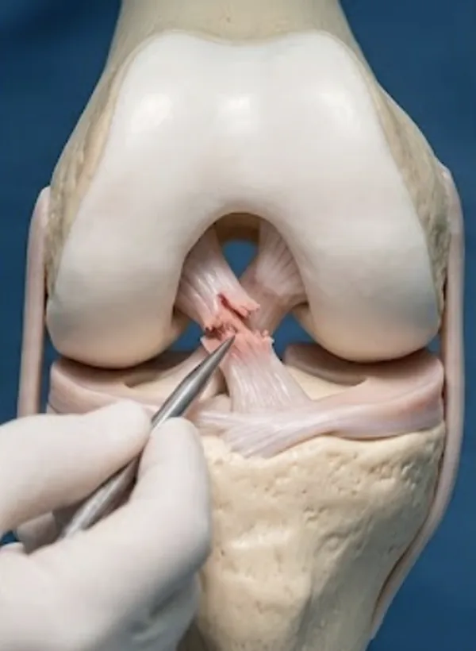

Η ρήξη του πρόσθιου χιαστού συνδέσμου είναι σοβαρός τραυματισμός του γόνατος, συχνός σε αθλητικές δραστηριότητες με αλλαγές κατεύθυνσης, προσγειώσεις ή στροφικές κινήσεις. Συνήθως συνοδεύεται από έντονο πόνο, πρήξιμο και αίσθημα αστάθειας.
Η θεραπευτική προσέγγιση εξαρτάται από την ηλικία, το επίπεδο δραστηριότητας και τις απαιτήσεις του ασθενούς. Σε αθλητικά δραστήριους ασθενείς συχνά προτείνεται αρθροσκοπική ανακατασκευή, με στόχο την αποκατάσταση της σταθερότητας και την πρόληψη περαιτέρω βλαβών.
Τι περιλαμβάνει
- Διάγνωση αστάθειας γόνατος
- Αξιολόγηση συνοδών βλαβών μηνίσκων/χόνδρου
- Συντηρητική αποκατάσταση όπου ενδείκνυται
- Αρθροσκοπική ανακατασκευή ΠΧΣ
- Πλάνο επιστροφής σε άθληση
Συχνές ερωτήσεις
Μπορώ να ζήσω χωρίς πρόσθιο χιαστό;
Σε χαμηλές απαιτήσεις δραστηριότητας ορισμένοι ασθενείς ανταποκρίνονται συντηρητικά. Σε αστάθεια ή αθλητικές απαιτήσεις συχνά χρειάζεται ανακατασκευή.
Γιατί πρήζεται γρήγορα το γόνατο;
Το ταχύ οίδημα μετά από τραυματισμό μπορεί να οφείλεται σε αιμάρθρωση, συχνό εύρημα σε ρήξη ΠΧΣ.
Η επέμβαση γίνεται αρθροσκοπικά;
Στις περισσότερες περιπτώσεις η ανακατασκευή γίνεται με αρθροσκοπική τεχνική και μικρές τομές.
Πότε επιστρέφω στις αθλητικές δραστηριότητες;
Η επάνοδος είναι σταδιακή και καθορίζεται από λειτουργικά κριτήρια, όχι μόνο από τον χρόνο. Ενδεικτικά: ελεύθερη βάδιση και καθημερινές δραστηριότητες τις πρώτες εβδομάδες, τρέξιμο σε ευθεία συνήθως μετά τον 3ο–4ο μήνα, ασκήσεις αλλαγής κατεύθυνσης και προπόνηση ειδική για το άθλημα μετά τον 6ο μήνα, ενώ η πλήρης επιστροφή σε αθλήματα επαφής ή με στροφικά φορτία τοποθετείται συνήθως στους 9–12 μήνες.
Ποια κριτήρια πρέπει να πληρώ για ασφαλή επάνοδο;
Πλήρες και ανώδυνο εύρος κίνησης, γόνατο χωρίς οίδημα, δύναμη τετρακεφάλου και οπισθίων μηριαίων κοντά στο υγιές σκέλος, καλός νευρομυϊκός έλεγχος και επιτυχής ολοκλήρωση λειτουργικών δοκιμασιών, όπως τα άλματα σε ένα πόδι. Η πρόωρη επιστροφή αυξάνει σημαντικά τον κίνδυνο επανατραυματισμού.